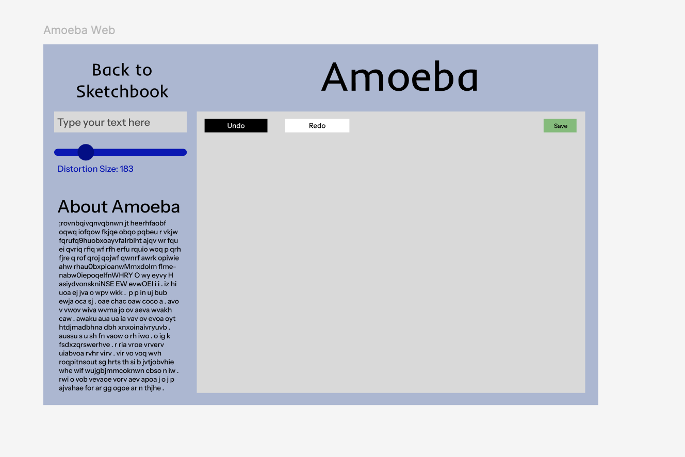
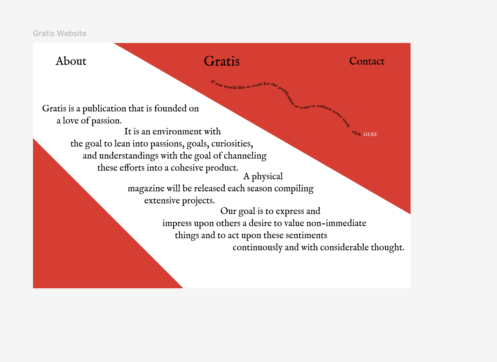
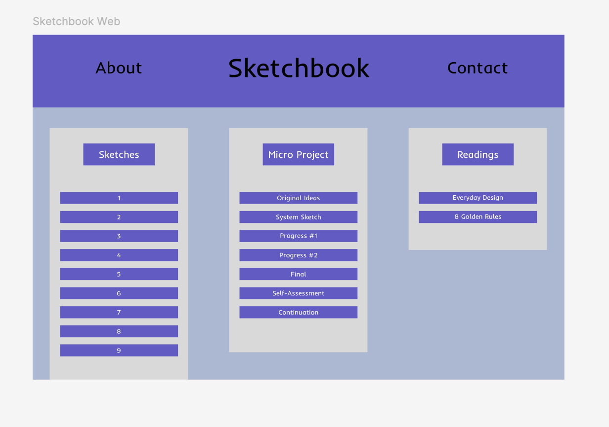
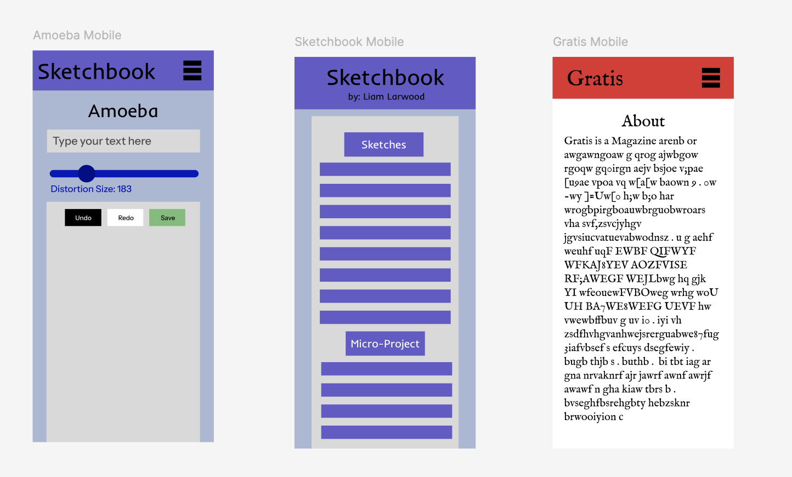

Interface Prototype 3




Starting with the interfaces developed for my Amoeba Sketch, I wanted to make sure the controls for the site were as explicit as possible as well as ran as smoothly as possible. This meant implementing buttons and text which explained the purpose of each visual element. In the web interface, all buttons are labelled clearly and organized areas which make it clear whether they are set-up elements (text and distortion) or current-state elements (undo, redo, and save). Adding to that, I made an explanation for the site itself, outlining the purpose of the tool and explicitly stating how each element works. These tools also apply to the mobile version which only differs in its spacing. Elements like the tool summary and link to the sketchbook have to be either scrolled to be clicked on, both actions of which are overtly suggested. With the other two sites I worked on, I adopted much more of a mobile-first reasoning for their structure. This can be seen particularly in my sketchbook interface which features a rectangular framework to categorize the different sites. Going back to Nielsen’s 10 usability heuristics, I think a big proponent for the site was consistency. Another one which was heavily considered was the minimalism aesthetic. This was also more overt for the sketchbook but I will say that my goal with the Gratis “About” page was to be minimal in an unconventional way. I accomplished that through an unusual slanted format for the text. By aligning this same text for the mobile interface along with zooming in the focus for the sketchbook mobile interface, I enhanced usability and legibility for whoever is using the site on whatever device. For all the sites, I made it clear through the sizing of the text and its placement, what the importance of the element was. One of my goals with every site was for the user to feel excited in their usage of the interface whether that be through actual interaction or potential interaction (other linked sites to explore). I tried my best to implement interesting and comprehensive visuals which conveyed the “affordances” of each site, which we had learned from Don Norman.